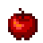
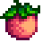

Template:Name/doc
Description
This template is used to place the picture of a named item next to the name, resizes the image to 24px wide, makes the item name a link if there's an available article of the same name, and lastly places the third parameter in parenthesis to signify quantity, relationship or any other secondary detail. To refer to villagers and NPCs, use Template:NPC.
Image size can be adjusted by adding the parameter "size".
Use
This template can be used by entering the following onto a relevant page.
{{name|''item name''|''amount''}}
Optional Parameters
All Optional Parameters if used together with "quantity" should be placed after the quantity value!
- size: the image size to be displayed (example: size=48)
- link: replace the name with a link to another page
- class: alternative classes. Currently there is only inline to suppress line break (example: class=inline)
Examples
{{name|Complete Breakfast|30}}
When used the parameters are not identified by name, but by order. Example use of this template;
{{name|Corn|30}}
Result:  Corn (30)
Corn (30)
{{name|Preserves Jar|3}}
Result:  Preserves Jar (3)
Preserves Jar (3)
Optional parameter examples:
Crafting recipe unlocked at {{name|Mining|Level 9|class=inline}}.
Result: Crafting recipe unlocked at  Mining (Level 9).
Mining (Level 9).
Size can be defined by using the named parameter "size":
{{name|Apple|size=48}}
Result:  Apple
{{name|Melon|3|size=48}}
Result:  Melon (3)
{{name|Corn|3|link=Grape}}
Result:  Grape (3)
Grape (3)